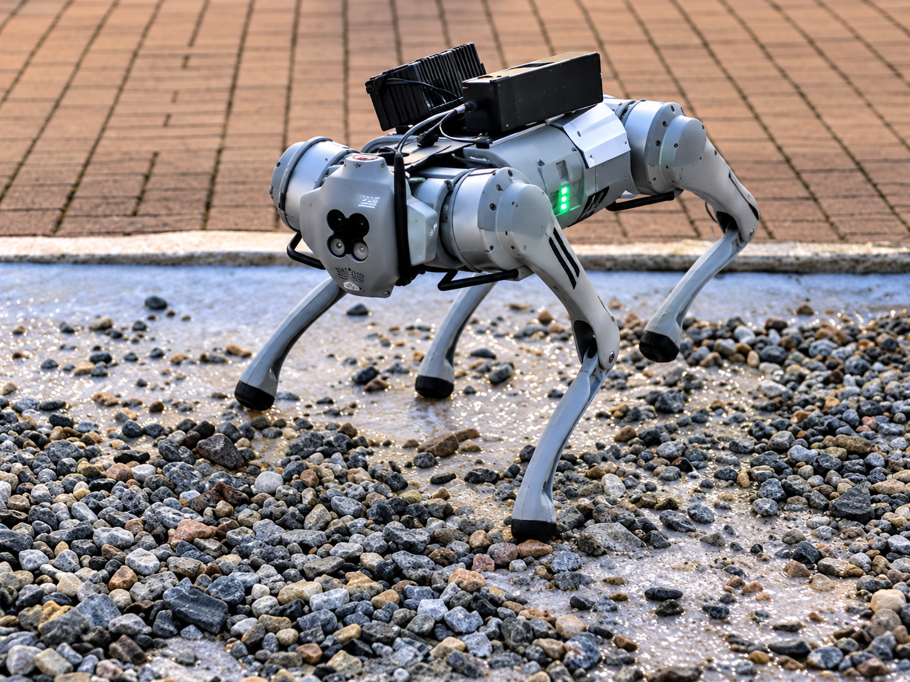
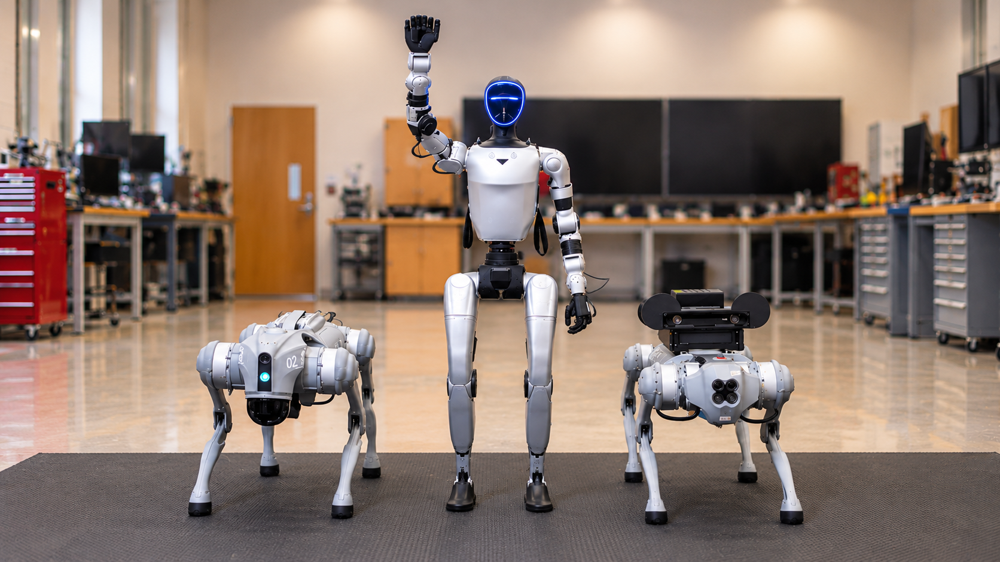
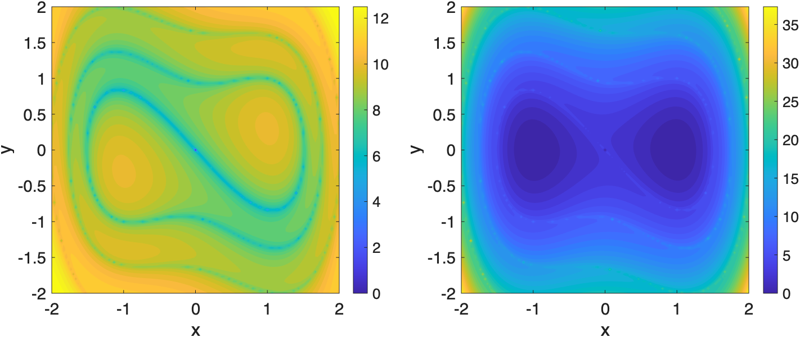
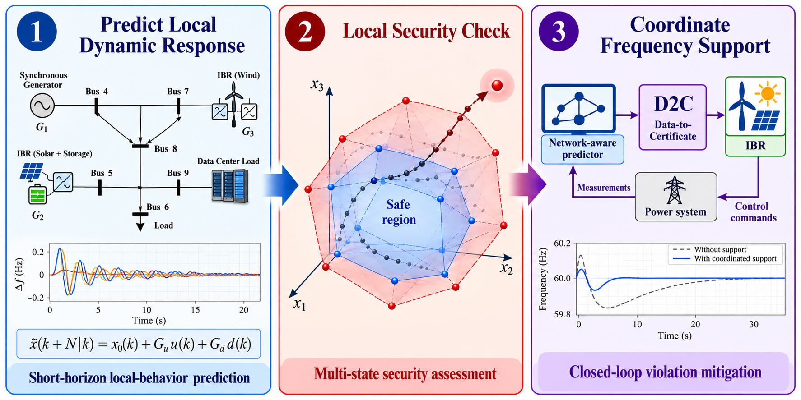
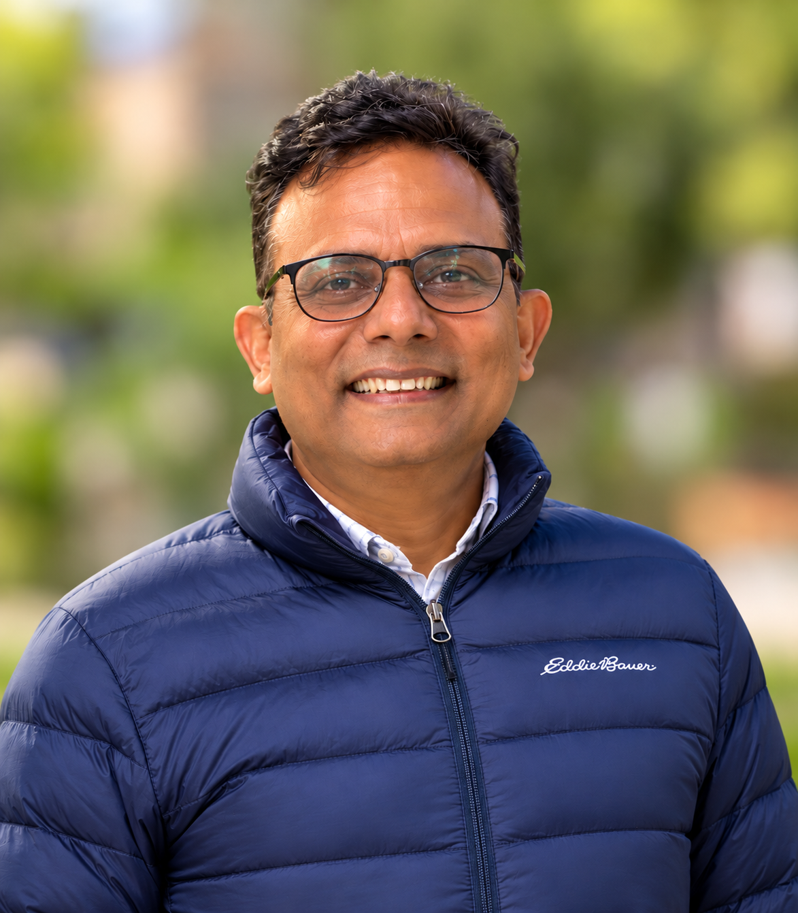

Off-road autonomy and robotics
Operator-based learning and predictive control for navigation across challenging terrain.
Research & demonstrations
Dynamics and Control for Autonomy and Intelligence
From Mathematical Foundations to Reliable Autonomous Systems.
Welcome to DyCoAI
We study the dynamics of complex systems and develop the tools to control them reliably. Led by Prof. Umesh Vaidya at Clemson University, our laboratory connects dynamical systems, learning, and optimization with robotics, energy, and networked systems.
Through theory, simulation, and experimentation, we turn mathematical foundations into methods for safe, robust, and intelligent autonomy.
Our research
Koopman and Perron-Frobenius operators, spectral analysis, and nonlinear dynamics.
Data-driven models, stability certificates, and safety-constrained control.
Information flow, uncertainty, and the dynamics of interconnected systems.
Terrain-aware planning and control for ground vehicles and quadruped robots.
Stability, renewable-energy integration, and robust grid operation.
Distributed control and optimization under communication constraints.
Research in action

Operator-based learning and predictive control for navigation across challenging terrain.
Research & demonstrations
Computational tools that connect nonlinear dynamics with data-driven analysis and control.
Explore the research
Stability analysis and robust optimization for power systems with uncertainty and renewable generation.
Explore the researchSelected work
P. Giesl, S. Hafstein, B. Hamzi, J. Lee, H. Owhadi, G. Santin, and U. Vaidya
Umesh Vaidya
Laboratory updates
NSF Division of Mathematical Sciences support for research from August 15, 2026, through July 31, 2029 (estimated).
Sarang Sutavani and Umesh Vaidya

The people behind the research
Directed by Prof. Umesh Vaidya in the Department of Mechanical Engineering, DyCoAI brings together researchers working across dynamics, control, learning, and autonomy.
Meet the laboratorySupport and collaboration
We gratefully acknowledge the agencies and partners supporting our research across current and past projects.